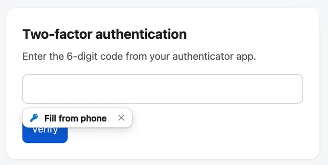

Mydroid Authenticator
Fill sign-in codes from your phone
When a site asks for a code, click Fill from phone. Approve the request on Android and the code appears in the browser.
- Browser extensionInstalled
- Mydroid for MacChecking…
- Android phoneChecking…

Choose which sites can show the button
Open Mydroid from your browser’s toolbar and click Enable on this site. Manage access later in the extension’s settings.
Enable it on all sites
Your browser will ask for access to HTTPS sites so Mydroid can find verification-code fields.